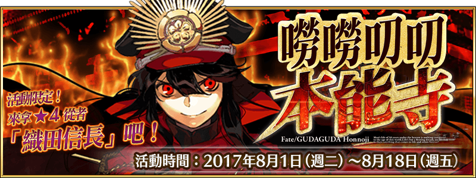

本頁面資訊僅供參考，實際情況請以遊戲內資料為準。
由於直接使用官方翻譯，可能會與其他站內翻譯相異，敬請見諒。
其他公告內容請參照日版當時公告翻譯。
- 主線關卡
-
序幕 時局正值英靈割據的戰國時代 消耗AP 推薦Lv. 初次報酬 開放條件 5 16 暫時加入 8/1 13:00~8/18 12:59 〉 職階傾向 QP Exp 絆 
2,000 630 175 Wave 1 1  Lv.8 迷你信 HP2,142
Lv.8 迷你信 HP2,1422 Lv.8 迷你信 HP2,1423 Lv.8 迷你信 HP2,142掉落 3300% 第一幕 奇襲！！ 嘮嘮叨叨桶狹間 消耗AP 推薦Lv. 初次報酬 開放條件 5 17 8/1 13:00~8/18 12:59
通過：序幕 時局正值英靈割據的戰國時代〉 職階傾向 QP Exp 絆 2,100 715 185 Wave 1 1 Lv.10 迷你信 HP2,5302 Lv.10 迷你信 HP2,5303 Lv.10 迷你信 HP2,530Wave 2 1 Lv.10 迷你信 HP2,5302 Lv.10 迷你信 HP2,5303 Lv.10 迷你信 HP2,530Wave 3 1 Lv.26 松平阿拉什 HP30,6722 Lv.12 迷你信 HP5,8743 Lv.12 迷你信 HP5,874掉落 3521003% 0.2% 0.4% 210% 71.4% 25% 240% 第二幕 颯爽！！ 嘮嘮叨叨三段擊 消耗AP 推薦Lv. 初次報酬 開放條件 5 18 8/1 13:00~8/18 12:59
通過：序幕 時局正值英靈割據的戰國時代
通過：第一幕 奇襲！！ 嘮嘮叨叨桶狹間〉〉 職階傾向 QP Exp 絆 

2,200 790 195 Wave 1 1  Lv.12 迷你信 HP2,877
Lv.12 迷你信 HP2,8772 Lv.12 迷你信 HP2,8773 Lv.12 迷你信 HP2,877Wave 2 1 Lv.12 迷你信 HP2,8772 Lv.12 迷你信 HP2,8773 Lv.12 迷你信 HP2,877Wave 3 1 Lv.24 武田大流士 HP23,8142 Lv.24 真田美杜莎 HP24,2883 Lv.14 巨大信 HP8,622掉落 321003% 3% 0.8% 180% 193.2% 320% 〉〉 職階傾向 QP Exp 絆 
2,200 790 195 Wave 1 1  Lv.14 迷你信 HP3,427
Lv.14 迷你信 HP3,4272 Lv.14 迷你信 HP3,4273 Lv.14 迷你信 HP3,427Wave 2 1 Lv.14 迷你信 HP3,4272 Lv.14 迷你信 HP3,4273 Lv.14 迷你信 HP3,427Wave 3 1  Lv.28 上杉阿爾托莉亞 HP42,973
Lv.28 上杉阿爾托莉亞 HP42,9732 Lv.16 迷你信 HP7,6543 Lv.16 銀之迷你信 HP7,654掉落 3421003005% 0.4% 0.8% 210% 68.8% 25% 140% 100% 第三幕 窮途！！ 嘮嘮叨叨包圍網 消耗AP 推薦Lv. 初次報酬 開放條件 5 20 8/1 13:00~8/18 12:59
通過：序幕 時局正值英靈割據的戰國時代
通過：第二幕 颯爽！！ 嘮嘮叨叨三段擊〉 職階傾向 QP Exp 絆 

2,400 955 215 Wave 1 1  Lv.15 迷你信 HP3,663
Lv.15 迷你信 HP3,6632 Lv.15 迷你信 HP3,6633 Lv.15 迷你信 HP3,663Wave 2 1 Lv.15 迷你信 HP3,6632 Lv.15 迷你信 HP3,6633  Lv.24 長宗我部衛親 HP15,500
Lv.24 長宗我部衛親 HP15,500Wave 3 1 Lv.26 島津瑟坦特 HP31,7342 Lv.26 毛利美狄就 HP22,5543 Lv.18 銀之迷你信 HP8,538掉落 34231003005% 5% 10% 0.8% 3.2% 150% 94.2% 94.2% 87.6% 100% 100% 第四幕 大勝利！！ 嘮嘮叨叨天下布武 消耗AP 推薦Lv. 初次報酬 開放條件 5 22 8/1 13:00~8/18 12:59
通過：序幕 時局正值英靈割據的戰國時代
通過：第三幕 窮途！！ 嘮嘮叨叨包圍網〉 職階傾向 QP Exp 絆 2,600 1,120 235 Wave 1 1  Lv.16 迷你信 HP3,714
Lv.16 迷你信 HP3,7142 Lv.16 迷你信 HP3,7143 Lv.16 迷你信 HP3,714Wave 2 1 Lv.24 黑天梅菲斯托 HP19,7242  Lv.24 竹中安徒生 HP14,872
Lv.24 竹中安徒生 HP14,872Wave 3 1  Lv.30 豐臣吉爾吉 HP53,536
Lv.30 豐臣吉爾吉 HP53,5362 Lv.24 金之迷你信 HP5,2853 Lv.24 金之迷你信 HP5,285掉落 324100100010% 10% 1.2% 4.8% 90% 187.6% 86.4% 60% 200% 最終幕 熊熊燃燒！！ 嘮嘮叨叨本能寺 消耗AP 推薦Lv. 初次報酬 開放條件 5 24 8/1 13:00~8/18 12:59
通過：序幕 時局正值英靈割據的戰國時代
通過：第四幕 大勝利！！ 嘮嘮叨叨天下布武〉 職階傾向 QP Exp 絆 2,800 1,300 255 Wave 1 1 Lv.44 壞人信 HP100,506掉落 61.2% 2.4% 96.4% - 自由關卡
-
嘮嘮叨叨蒐集茶器 初級 消耗AP 推薦Lv. 初次報酬 開放條件 10 20 58/1 13:00~8/18 12:59
通過：序幕 時局正值英靈割據的戰國時代
通過：第一幕 奇襲！！ 嘮嘮叨叨桶狹間∞ 職階傾向 QP Exp 絆 2,400 955 215 Wave 1 1 Lv.10 迷你信 HP2,530 Lv.10 亡者 HP2,323
Lv.10 亡者 HP2,3232 Lv.10 迷你信 HP2,5303 Lv.10 迷你信 HP2,530 Lv.10 亡者 HP2,323Wave 2 1 Lv.10 迷你信 HP2,530 Lv.10 亡者 HP2,3232 Lv.10 迷你信 HP2,530 Lv.10 亡者 HP2,3233 Lv.10 迷你信 HP2,530 Lv.10 亡者 HP2,323Wave 3 1 Lv.20 迷你信 HP13,4702 Lv.28 松平阿拉什 HP40,2703 Lv.20 迷你信 HP13,470 Lv.20 巨大信 HP9,835掉落 35210020% 3% 0.2% 0.4% 230% 170% 71.4% 45% 140% 嘮嘮叨叨蒐集茶器 中級 消耗AP 推薦Lv. 初次報酬 開放條件 20 30 58/1 13:00~8/18 12:59
通過：序幕 時局正值英靈割據的戰國時代
通過：第二幕 颯爽！！ 嘮嘮叨叨三段擊∞ 職階傾向 QP Exp 絆 3,400 2,190 315 Wave 1 1 Lv.15 迷你信 HP3,627 Lv.15 骸骨 HP3,6272 Lv.15 巨大信 HP9,6713 Lv.15 迷你信 HP3,627 Lv.15 骸骨 HP3,627Wave 2 1 Lv.15 迷你信 HP3,627 Lv.15 骸骨 HP3,6272 Lv.15 巨大信 HP9,671 Lv.15 骸骨 HP3,6273 Lv.28 真田美杜莎 HP22,365Wave 3 1 Lv.30 武田大流士 HP36,7602 Lv.30 上杉阿爾托莉亞 HP38,5383 Lv.25 銀之迷你信 HP16,941 Lv.25 巨大信 HP15,730掉落 324210030016% 5% 3% 3% 0.4% 1.6% 125% 184% 273.2% 68.8% 25% 190% 50% 嘮嘮叨叨蒐集茶器 上級 消耗AP 推薦Lv. 初次報酬 開放條件 30 40 58/1 13:00~8/18 12:59
通過：序幕 時局正值英靈割據的戰國時代
通過：第三幕 窮途！！ 嘮嘮叨叨包圍網∞ 職階傾向 QP Exp 絆 
4,400 5,690 415 Wave 1 1 Lv.20 巨大信 HP12,796 Lv.20 怨靈 HP6,793
Lv.20 怨靈 HP6,7932 Lv.20 迷你信 HP4,6733 Lv.20 巨大信 HP12,796Wave 2 1 Lv.20 巨大信 HP12,796 Lv.20 怨靈 HP6,7932 Lv.20 巨大信 HP12,796 Lv.20 怨靈 HP6,7933 Lv.40 長宗我部衛親 HP27,076Wave 3 1 Lv.55 島津瑟坦特 HP63,9632 Lv.48 毛利美狄就 HP57,1203 Lv.30 銀之迷你信 HP5,370 Lv.30 銀之巨大信 HP11,349掉落 324231003006% 5% 5% 10% 0.8% 3.2% 130% 100% 94.2% 90% 94.2% 87.6% 220% 150% 嘮嘮叨叨蒐集茶器 地獄變 ～等活地獄～ 消耗AP 推薦Lv. 初次報酬 開放條件 40 50 58/1 13:00~8/18 12:59
通過：序幕 時局正值英靈割據的戰國時代
通過：第四幕 大勝利！！ 嘮嘮叨叨天下布武∞ 職階傾向 QP Exp 絆 5,400 10,190 515 Wave 1 1 Lv.30 亡者 HP5,9232 Lv.30 亡者 HP5,9233 Lv.30 亡者 HP5,923Wave 2 1  Lv.36 地獄守衛 HP65,513
Lv.36 地獄守衛 HP65,513Wave 3 1 Lv.40 迷你信 HP7,7232  Lv.64 地獄機器人 血斧V HP151,760
Lv.64 地獄機器人 血斧V HP151,7603 Lv.40 金之迷你信 HP7,723掉落 335100100030% 8% 10% 1.3% 2.6% 30% 270% 92% 86.1% 20% 100% 嘮嘮叨叨蒐集茶器 地獄變 ～黑繩地獄～ 消耗AP 推薦Lv. 初次報酬 開放條件 40 55 58/3 0:00~8/18 12:59
通過：序幕 時局正值英靈割據的戰國時代
通過：第四幕 大勝利！！ 嘮嘮叨叨天下布武∞ 職階傾向 QP Exp 絆 5,900 12,815 565 Wave 1 1 Lv.40 骸骨 HP7,8862 Lv.40 骸骨 HP7,8863 Lv.40 骸骨 HP7,886Wave 2 1 Lv.48 貪婪龍 HP83,118Wave 3 1 Lv.45 金之迷你信 HP9,6872 Lv.65 赤鬼（ROMA規格） HP161,7723 Lv.45 巨大信 HP22,279掉落 323510010008% 30% 10% 1.4% 2.8% 40% 40% 270% 92% 85.8% 80% 100% 嘮嘮叨叨蒐集茶器 地獄變 ～眾合地獄～ 消耗AP 推薦Lv. 初次報酬 開放條件 40 60 58/5 0:00~8/18 12:59
通過：序幕 時局正值英靈割據的戰國時代
通過：第四幕 大勝利！！ 嘮嘮叨叨天下布武∞ 職階傾向 QP Exp 絆 6,400 15,690 615 Wave 1 1 Lv.42 怨靈 HP10,4742 Lv.42 怨靈 HP10,4743 Lv.42 怨靈 HP10,474Wave 2 1 Lv.40 嬌豔怨靈 HP81,035Wave 3 1  Lv.50 銀之迷你信 HP10,052
Lv.50 銀之迷你信 HP10,0522 Lv.86 公共秩序的境界 HP221,8753 Lv.50 金之迷你信 HP10,052掉落 36300100020% 10% 1.5% 3% 288% 92% 85.5% 100% 100% 嘮嘮叨叨蒐集茶器 地獄變 ～叫喚地獄～ 消耗AP 推薦Lv. 初次報酬 開放條件 40 65 58/7 0:00~8/18 12:59
通過：序幕 時局正值英靈割據的戰國時代
通過：第四幕 大勝利！！ 嘮嘮叨叨天下布武∞ 職階傾向 QP Exp 絆 6,900 18,815 665 Wave 1 1  Lv.48 人面馬 HP14,090
Lv.48 人面馬 HP14,0902 Lv.48 人面馬 HP14,0903 Lv.48 人面馬 HP14,090Wave 2 1 Lv.50 鬼面馬 HP72,344Wave 3 1 Lv.55 金之迷你信 HP11,1272  Lv.70 暴風之暴飲船長（吊銷執照） HP250,317
Lv.70 暴風之暴飲船長（吊銷執照） HP250,3173 Lv.55 銀之巨大信 HP25,784掉落 236300100020% 10% 1.6% 3.2% 288% 92% 85.2% 200% 100% 嘮嘮叨叨蒐集茶器 地獄變 ～大叫喚地獄～ 消耗AP 推薦Lv. 初次報酬 開放條件 40 70 58/9 0:00~8/18 12:59
通過：序幕 時局正值英靈割據的戰國時代
通過：第四幕 大勝利！！ 嘮嘮叨叨天下布武∞ 職階傾向 QP Exp 絆 7,400 22,190 715 Wave 1 1 Lv.38 餓鬼 HP15,2192 Lv.38 餓鬼 HP15,2193 Lv.38 餓鬼 HP15,219Wave 2 1  Lv.33 獄卒獸 HP81,736
Lv.33 獄卒獸 HP81,736Wave 3 1 Lv.60 金之迷你信 HP12,8322  Lv.90 地獄塗壁 HP264,990
Lv.90 地獄塗壁 HP264,9903 Lv.60 金之迷你信 HP12,832掉落 347100024% 12% 10% 1.7% 3.4% 276% 88% 84.9% 200% 嘮嘮叨叨蒐集茶器 地獄變 ～焦熱地獄～ 消耗AP 推薦Lv. 初次報酬 開放條件 40 75 58/11 0:00~8/18 12:59
通過：序幕 時局正值英靈割據的戰國時代
通過：第四幕 大勝利！！ 嘮嘮叨叨天下布武∞ 職階傾向 QP Exp 絆 7,900 25,815 765 Wave 1 1 Lv.38 蛇女 HP14,9602 Lv.38 蛇女 HP14,9603 Lv.38 蛇女 HP14,960Wave 2 1  Lv.32 羅剎鬼 HP81,361
Lv.32 羅剎鬼 HP81,361Wave 3 1 Lv.65 金之迷你信 HP13,3182 Lv.90 青鬼（COOL規格） HP272,7853 Lv.60 金之巨大信 HP17,906掉落 369100018% 12% 10% 1.8% 3.6% 282% 88% 84.6% 300% 嘮嘮叨叨蒐集茶器 地獄變 ～大焦熱地獄～ 消耗AP 推薦Lv. 初次報酬 開放條件 40 80 58/13 0:00~8/18 12:59
通過：序幕 時局正值英靈割據的戰國時代
通過：第四幕 大勝利！！ 嘮嘮叨叨天下布武∞ 職階傾向 QP Exp 絆 8,400 29,690 815 Wave 1 1  Lv.46 尼僧涅眾 HP11,224
Lv.46 尼僧涅眾 HP11,2242 Lv.46 尼僧涅眾 HP11,2243 Lv.46 尼僧涅眾 HP11,224Wave 2 1 Lv.52 業炎龍 HP61,052Wave 3 1 Lv.60 金之巨大信 HP17,9062 Lv.80 嘮嘮叨叨天魔王信 HP256,0143 Lv.60 金之巨大信 HP17,906掉落 4710100018% 15% 10% 1.9% 3.8% 282% 85% 84.3% 400% 嘮嘮叨叨蒐集茶器 地獄變 ～無間地獄～ 消耗AP 推薦Lv. 初次報酬 開放條件 40 90 8/15 0:00~8/18 12:59
通過：序幕 時局正值英靈割據的戰國時代
通過：第四幕 大勝利！！ 嘮嘮叨叨天下布武∞ 職階傾向 QP Exp 絆 
9,400 38,190 915 Wave 1 1 Lv.66 地獄機器人 血斧V HP46,6862 Lv.66 赤鬼（ROMA規格） HP57,1923 Lv.66 公共秩序的境界 HP42,5704 Lv.66 暴風之暴飲船長（吊銷執照） HP52,3445 Lv.66 地獄塗壁 HP55,5606 Lv.66 青鬼（COOL規格） HP56,6587 Lv.66 嘮嘮叨叨天魔王信 HP59,3828 9 Lv.44 金之巨大信 HP13,22010 Lv.44 金之巨大信 HP13,22011 Lv.44 金之巨大信 HP13,22012 Lv.80 鋒利度未變的沖田 HP123,992掉落 410100010% 2% 7.5% 696.5% 84% 600% - 黃金天國
-
【1日1次限定！】 嘮嘮叨叨黃金天國 貳 消耗AP 推薦Lv. 初次報酬 開放條件 1 8 8/2 0:00~8/18 12:59
通過：序幕 時局正值英靈割據的戰國時代
通過：最終幕 熊熊燃燒！！ 嘮嘮叨叨本能寺〉 職階傾向 QP Exp 絆 1,200 155 95 Wave 1 1 Lv.8 銀之迷你信 HP1,9672 Lv.8 金之迷你信 HP1,9673 Lv.8 銀之迷你信 HP1,967Wave 2 1 Lv.8 銀之迷你信 HP1,9672 Lv.8 金之迷你信 HP1,9673 Lv.8 銀之迷你信 HP1,967Wave 3 1 Lv.8 銀之迷你信 HP1,9672 Lv.8 金之迷你信 HP1,9673 Lv.8 銀之巨大信 HP4,822掉落 3001000700% 300% 【1日1次限定！】 嘮嘮叨叨黃金天國 叁 消耗AP 推薦Lv. 初次報酬 開放條件 1 10 8/3 0:00~8/18 12:59
通過：序幕 時局正值英靈割據的戰國時代
通過：最終幕 熊熊燃燒！！ 嘮嘮叨叨本能寺〉 職階傾向 QP Exp 絆 1,400 275 115 Wave 1 1 Lv.10 金之迷你信 HP2,3232 Lv.10 銀之迷你信 HP2,3233 Lv.10 銀之迷你信 HP2,323Wave 2 1 Lv.10 銀之迷你信 HP2,3232 Lv.10 銀之迷你信 HP2,3233 Lv.10 金之迷你信 HP2,323Wave 3 1 Lv.10 銀之巨大信 HP5,8912 Lv.10 金之迷你信 HP2,3233 Lv.10 銀之巨大信 HP5,891掉落 3001000800% 300% 【1日1次限定！】 嘮嘮叨叨黃金天國 肆 消耗AP 推薦Lv. 初次報酬 開放條件 1 13 8/4 0:00~8/18 12:59
通過：序幕 時局正值英靈割據的戰國時代
通過：最終幕 熊熊燃燒！！ 嘮嘮叨叨本能寺〉 職階傾向 QP Exp 絆 1,700 415 145 Wave 1 1 Lv.13 銀之迷你信 HP2,8762 Lv.13 銀之迷你信 HP2,8763 Lv.13 金之迷你信 HP2,876Wave 2 1 Lv.13 銀之巨大信 HP7,5482 Lv.13 銀之巨大信 HP7,5483 Lv.13 銀之巨大信 HP7,548Wave 3 1 Lv.13 金之迷你信 HP2,8762 Lv.13 金之迷你信 HP2,8763 Lv.13 銀之巨大信 HP7,548掉落 30010001,000% 300% 【1日1次限定！】 嘮嘮叨叨黃金天國 伍 消耗AP 推薦Lv. 初次報酬 開放條件 1 15 8/5 0:00~8/18 12:59
通過：序幕 時局正值英靈割據的戰國時代
通過：最終幕 熊熊燃燒！！ 嘮嘮叨叨本能寺〉 職階傾向 QP Exp 絆 1,900 550 165 Wave 1 1 Lv.15 銀之迷你信 HP3,2322 Lv.15 金之迷你信 HP3,2323 Lv.15 銀之巨大信 HP8,617Wave 2 1 Lv.15 金之迷你信 HP3,2322 Lv.15 銀之巨大信 HP8,6173 Lv.15 銀之巨大信 HP8,617Wave 3 1 Lv.15 金之迷你信 HP3,2322 Lv.15 金之迷你信 HP3,2323 Lv.15 銀之巨大信 HP8,617掉落 3001000900% 400% 【1日1次限定！】 嘮嘮叨叨黃金天國 陸 消耗AP 推薦Lv. 初次報酬 開放條件 1 18 8/6 0:00~8/18 12:59
通過：序幕 時局正值英靈割據的戰國時代
通過：最終幕 熊熊燃燒！！ 嘮嘮叨叨本能寺〉 職階傾向 QP Exp 絆 2,200 790 195 Wave 1 1 Lv.18 銀之巨大信 HP10,2212 Lv.18 金之迷你信 HP3,7673 Lv.18 銀之巨大信 HP10,221Wave 2 1 Lv.18 金之迷你信 HP3,7672 Lv.18 銀之巨大信 HP10,2213 Lv.18 銀之巨大信 HP10,221Wave 3 1 Lv.18 金之迷你信 HP3,7672 Lv.18 金之迷你信 HP3,7673 Lv.18 金之迷你信 HP3,767掉落 3001000800% 500% 【1日1次限定！】 嘮嘮叨叨黃金天國 柒 消耗AP 推薦Lv. 初次報酬 開放條件 1 20 8/7 0:00~8/18 12:59
通過：序幕 時局正值英靈割據的戰國時代
通過：最終幕 熊熊燃燒！！ 嘮嘮叨叨本能寺〉 職階傾向 QP Exp 絆 2,400 955 215 Wave 1 1 Lv.20 銀之巨大信 HP11,2902 Lv.20 金之迷你信 HP4,1233 Lv.20 金之迷你信 HP4,123Wave 2 1 Lv.20 金之迷你信 HP4,1232 Lv.20 金之迷你信 HP4,1233 Lv.20 銀之巨大信 HP11,290Wave 3 1 Lv.20 金之迷你信 HP4,1232 Lv.20 金之迷你信 HP4,1233 Lv.20 金之迷你信 HP4,123掉落 3001000400% 700% 【1日1次限定！】 嘮嘮叨叨黃金天國 捌 消耗AP 推薦Lv. 初次報酬 開放條件 1 21 8/8 0:00~8/18 12:59
通過：序幕 時局正值英靈割據的戰國時代
通過：最終幕 熊熊燃燒！！ 嘮嘮叨叨本能寺〉 職階傾向 QP Exp 絆 2,500 1,030 225 Wave 1 1 Lv.23 金之迷你信 HP4,6762 Lv.23 金之迷你信 HP4,6763 Lv.23 金之迷你信 HP4,676Wave 2 1 Lv.23 金之迷你信 HP4,6762 Lv.23 金之迷你信 HP4,6763 Lv.23 金之迷你信 HP4,676Wave 3 1 Lv.23 金之迷你信 HP4,6762 Lv.23 金之迷你信 HP4,6763 Lv.23 金之迷你信 HP4,676掉落 1000900% 【1日1次限定！】 嘮嘮叨叨黃金天國 玖 消耗AP 推薦Lv. 初次報酬 開放條件 1 22 8/9 0:00~8/18 12:59
通過：序幕 時局正值英靈割據的戰國時代
通過：最終幕 熊熊燃燒！！ 嘮嘮叨叨本能寺〉 職階傾向 QP Exp 絆 2,600 1,120 235 Wave 1 1 Lv.24 金之迷你信 HP4,8542 Lv.24 金之迷你信 HP4,8543 Lv.24 金之迷你信 HP4,854Wave 2 1 Lv.24 金之迷你信 HP4,8542 Lv.24 金之迷你信 HP4,8543 Lv.24 金之迷你信 HP4,854Wave 3 1 Lv.24 金之巨大信 HP6,7412 Lv.24 金之迷你信 HP4,8543 Lv.24 金之巨大信 HP6,741掉落 10001,100% 【1日1次限定！】 嘮嘮叨叨黃金天國 拾 消耗AP 推薦Lv. 初次報酬 開放條件 1 23 8/10 0:00~8/18 12:59
通過：序幕 時局正值英靈割據的戰國時代
通過：最終幕 熊熊燃燒！！ 嘮嘮叨叨本能寺〉 職階傾向 QP Exp 絆 2,700 1,210 245 Wave 1 1 Lv.24 金之迷你信 HP4,8542 Lv.24 金之迷你信 HP4,8543 Lv.24 金之迷你信 HP4,854Wave 2 1 Lv.24 金之迷你信 HP4,8542 Lv.24 金之迷你信 HP4,8543 Lv.24 金之巨大信 HP6,741Wave 3 1 Lv.24 金之巨大信 HP6,7412 Lv.24 金之巨大信 HP6,7413 Lv.24 金之巨大信 HP6,741掉落 10001,300% 【1日1次限定！】 嘮嘮叨叨黃金天國 拾壹 消耗AP 推薦Lv. 初次報酬 開放條件 1 24 8/11 0:00~8/18 12:59
通過：序幕 時局正值英靈割據的戰國時代
通過：最終幕 熊熊燃燒！！ 嘮嘮叨叨本能寺〉 職階傾向 QP Exp 絆 2,800 1,300 255 Wave 1 1 Lv.24 金之迷你信 HP4,8542 Lv.24 金之迷你信 HP4,8543 Lv.24 金之迷你信 HP4,854Wave 2 1 Lv.24 金之巨大信 HP6,7412 Lv.24 金之巨大信 HP6,7413 Lv.24 金之巨大信 HP6,741Wave 3 1 Lv.24 金之巨大信 HP6,7412 Lv.24 金之巨大信 HP6,7413 Lv.24 金之巨大信 HP6,741掉落 10001,500% 【1日1次限定！】 嘮嘮叨叨黃金天國 拾貳 消耗AP 推薦Lv. 初次報酬 開放條件 1 25 8/12 0:00~8/18 12:59
通過：序幕 時局正值英靈割據的戰國時代
通過：最終幕 熊熊燃燒！！ 嘮嘮叨叨本能寺〉 職階傾向 QP Exp 絆 2,900 1,385 265 Wave 1 1 Lv.24 金之迷你信 HP4,8542 Lv.24 金之迷你信 HP4,8543 Lv.24 金之迷你信 HP4,854Wave 2 1 Lv.24 金之迷你信 HP4,8542 Lv.24 金之迷你信 HP4,8543 Lv.24 金之迷你信 HP4,854Wave 3 1 Lv.24 金之巨大信 HP6,7412 Lv.24 金之巨大信 HP6,7413 Lv.24 金之巨大信 HP6,741Wave 4 1 Lv.24 金之巨大信 HP6,7412 Lv.24 金之巨大信 HP6,7413 Lv.24 金之巨大信 HP6,741掉落 10001,800% 【1日1次限定！】 嘮嘮叨叨黃金天國 拾叁 消耗AP 推薦Lv. 初次報酬 開放條件 1 26 8/13 0:00~8/18 12:59
通過：序幕 時局正值英靈割據的戰國時代
通過：最終幕 熊熊燃燒！！ 嘮嘮叨叨本能寺〉 職階傾向 QP Exp 絆 3,000 1,455 275 Wave 1 1 Lv.24 金之迷你信 HP4,8542 Lv.24 金之迷你信 HP4,8543 Lv.24 金之巨大信 HP6,741Wave 2 1 Lv.24 金之巨大信 HP6,7412 Lv.24 金之迷你信 HP4,8543 Lv.24 金之巨大信 HP6,741Wave 3 1 Lv.24 金之巨大信 HP6,7412 Lv.24 金之巨大信 HP6,7413 Lv.24 金之巨大信 HP6,741Wave 4 1 Lv.24 金之巨大信 HP6,7412 Lv.24 金之巨大信 HP6,7413 Lv.24 金之巨大信 HP6,741掉落 10002,100% 【1日1次限定！】 嘮嘮叨叨黃金天國 拾肆 消耗AP 推薦Lv. 初次報酬 開放條件 1 27 8/14 0:00~8/18 12:59
通過：序幕 時局正值英靈割據的戰國時代
通過：最終幕 熊熊燃燒！！ 嘮嘮叨叨本能寺〉 職階傾向 QP Exp 絆 3,100 1,540 285 Wave 1 1 Lv.24 金之巨大信 HP6,7412 Lv.24 金之巨大信 HP6,7413 Lv.24 金之巨大信 HP6,741Wave 2 1 Lv.24 金之巨大信 HP6,7412 Lv.24 金之巨大信 HP6,7413 Lv.24 金之巨大信 HP6,741Wave 3 1 Lv.24 金之巨大信 HP6,7412 Lv.24 金之巨大信 HP6,7413 Lv.24 金之巨大信 HP6,741Wave 4 1 Lv.24 金之巨大信 HP6,7412 Lv.24 金之巨大信 HP6,7413 Lv.24 金之巨大信 HP6,741掉落 10002,400% 【1日1次限定！】 嘮嘮叨叨黃金天國 拾伍 消耗AP 推薦Lv. 初次報酬 開放條件 1 28 8/15 0:00~8/18 12:59
通過：序幕 時局正值英靈割據的戰國時代
通過：最終幕 熊熊燃燒！！ 嘮嘮叨叨本能寺〉 職階傾向 QP Exp 絆 3,200 1,610 295 Wave 1 1 Lv.24 金之巨大信 HP6,7412 Lv.24 金之巨大信 HP6,7413 Lv.24 金之巨大信 HP6,741Wave 2 1 Lv.24 金之巨大信 HP6,7412 Lv.24 金之巨大信 HP6,7413 Lv.24 金之巨大信 HP6,741Wave 3 1 Lv.24 金之巨大信 HP6,7412 Lv.24 金之巨大信 HP6,7413 Lv.24 金之巨大信 HP6,741Wave 4 1 Lv.24 金之巨大信 HP6,7412 Lv.24 金之巨大信 HP6,7413 Lv.24 金之巨大信 HP6,741Wave 5 1 Lv.24 金之巨大信 HP6,7412 Lv.24 金之巨大信 HP6,7413 Lv.24 金之巨大信 HP6,741掉落 10003,000% 【1日1次限定！】 嘮嘮叨叨黃金天國 拾陸 消耗AP 推薦Lv. 初次報酬 開放條件 1 30 8/16 0:00~8/18 12:59
通過：序幕 時局正值英靈割據的戰國時代
通過：最終幕 熊熊燃燒！！ 嘮嘮叨叨本能寺〉 職階傾向 QP Exp 絆 3,400 2,190 315 Wave 1 1 Lv.24 金之巨大信 HP6,7412 Lv.24 金之巨大信 HP6,7413 Lv.24 金之巨大信 HP6,7414 Lv.24 金之巨大信 HP6,7415 Lv.24 金之巨大信 HP6,7416 Lv.24 金之巨大信 HP6,7417 Lv.24 金之巨大信 HP6,7418 Lv.24 金之巨大信 HP6,7419 Lv.24 金之巨大信 HP6,74110 Lv.24 金之巨大信 HP6,74111 Lv.24 金之巨大信 HP6,74112 Lv.24 金之巨大信 HP6,74113 Lv.24 金之巨大信 HP6,74114 Lv.24 金之巨大信 HP6,74115 Lv.24 金之巨大信 HP6,74116 Lv.24 金之巨大信 HP6,74117 Lv.24 金之巨大信 HP6,74118 Lv.24 金之巨大信 HP6,74119 Lv.24 金之巨大信 HP6,74120 Lv.24 金之巨大信 HP6,741掉落 10004,000%
| 報酬 | 點數 | 報酬 | 點數 | 報酬 | 點數 | 報酬 | 點數 |
|---|---|---|---|---|---|---|---|
| 100 | 500000 | 78,000 | 347,000 | 804,000 | |||
500000 | 500 | 84,000 | 359,000 | 822,000 | |||
| 1,000 | 90,000 | 371,000 | 2000000 | 840,000 | |||
500000 | 1,500 | 100,000 | 383,000 | 858,000 | |||
| 2,000 | 106,000 | 1000000 | 395,000 | 877,000 | |||
| 2,500 | 112,000 | 408,000 | 896,000 | ||||
500000 | 3,000 | 1000000 | 119,000 | 421,000 | 2000000 | 915,000 | |
| 4,000 | 126,000 | 434,000 | 934,000 | ||||
500000 | 5,000 | 133,000 | 450,000 | 953,000 | |||
| 6,000 | 140,000 | 463,000 | 973,000 | ||||
| 7,000 | 1000000 | 147,000 | 1000000 | 477,000 | 1,000,000 | ||
| 8,000 | 155,000 | 491,000 | 2000000 | 1,020,000 | |||
500000 | 10,000 | 163,000 | 505,000 | 1,040,000 | |||
| 12,000 | 171,000 | 519,000 | 1,060,000 | ||||
| 14,000 | 1000000 | 179,000 | 533,000 | 1,082,000 | |||
| 16,000 | 187,000 | 1000000 | 548,000 | 1,104,000 | |||
500000 | 18,000 | 196,000 | 563,000 | 1,126,000 | |||
| 21,000 | 205,000 | 578,000 | 2000000 | 1,148,000 | |||
| 24,000 | 1000000 | 214,000 | 593,000 | 1,170,000 | |||
500000 | 27,000 | 223,000 | 608,000 | 1,195,000 | |||
| 30,000 | 232,000 | 1000000 | 624,000 | 1,220,000 | |||
| 33,000 | 242,000 | 640,000 | 1,245,000 | ||||
| 37,000 | 250,000 | 656,000 | 1,270,000 | ||||
500000 | 41,000 | 1000000 | 260,000 | 672,000 | 5000000 | 1,295,000 | |
| 45,000 | 270,000 | 688,000 | 1,325,000 | ||||
| 49,000 | 280,000 | 700,000 | 1,355,000 | ||||
500000 | 53,000 | 291,000 | 717,000 | 1,385,000 | |||
| 58,000 | 302,000 | 734,000 | 1,415,000 | ||||
| 63,000 | 313,000 | 751,000 | 1,500,000 | ||||
| 68,000 | 324,000 | 2000000 | 768,000 | ||||
| 73,000 | 1000000 | 335,000 | 786,000 |